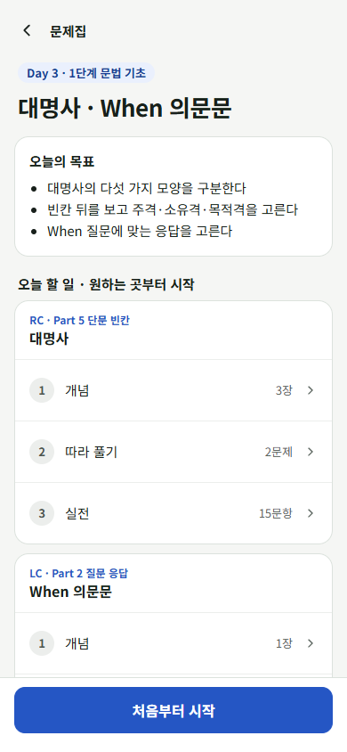
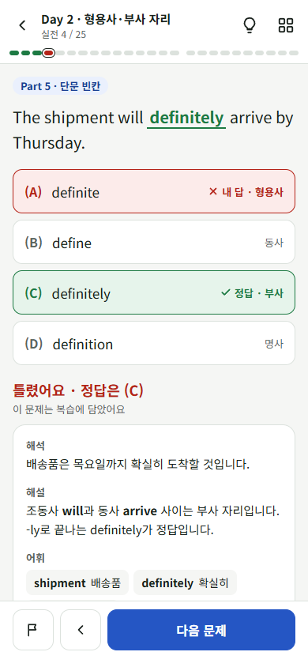
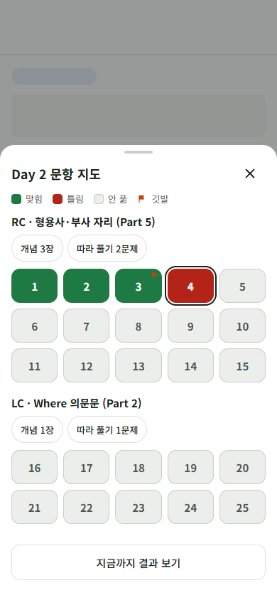
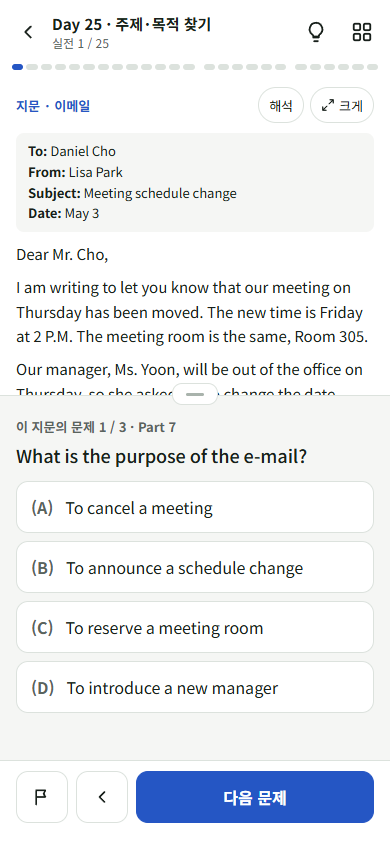
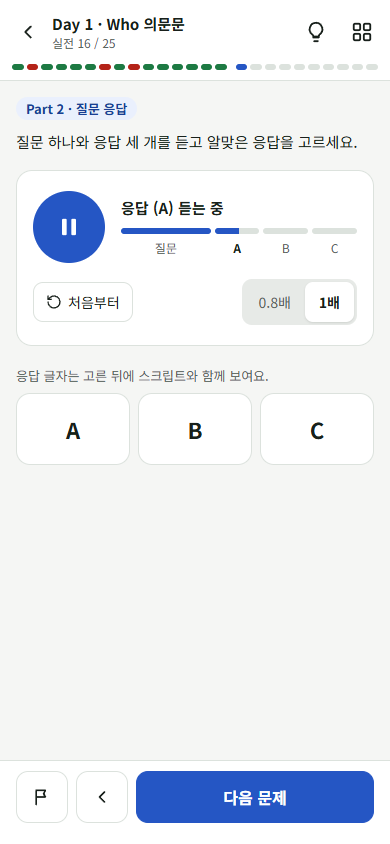
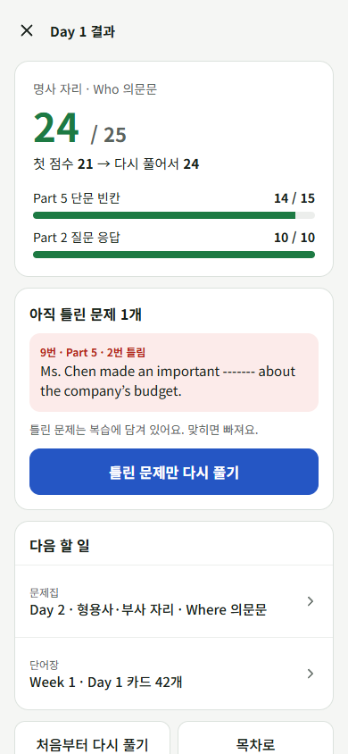
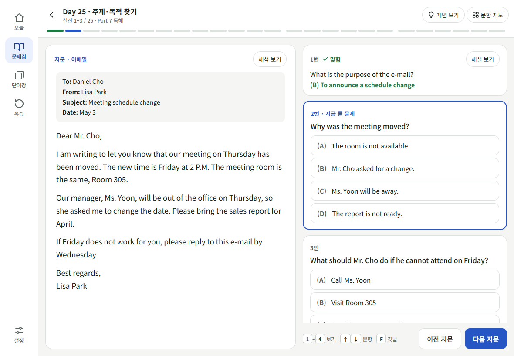
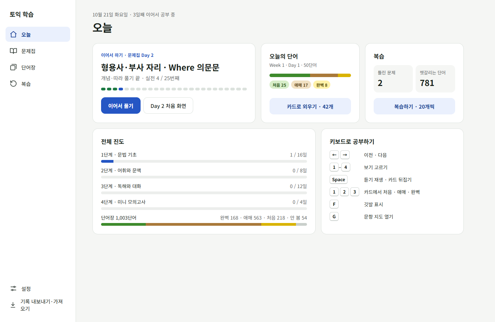

2026-10-21 웹 캔버스를 로컬로 옮긴 사본입니다. 그림을 누르면 실제로 눌러 볼 수 있는 화면이 열립니다. 내용은 기존 문제집과 PDF 단어장의 실제 문항·단어이고, 진도 숫자는 예시입니다.
바뀐 점 - 설정이 첫 화면을 차지하던 것 → 오른쪽 위 버튼으로 - 열면 '이어서 하기'가 맨 위, 한 번 눌러 바로 공부 - 하단 탭 4개: 오늘 · 문제집 · 단어장 · 복습 - 틀린 문제와 헷갈리는 단어를 Day 상관없이 '복습'에 모음
바뀐 점 - 33쪽 일직선 → Day 안을 '개념 · 따라 풀기 · 실전' 구간으로 나눔 - 문항 지도로 아무 문항이나 바로 이동, 깃발 표시 - 하단 바가 해설을 가리지 않음 - 지문은 위에 고정, 문제만 넘어감 - 채점 방식은 Day를 시작할 때 고름






단어 상태 - 색은 PDF 범례 그대로: 노랑 완벽 · 베이지 애매 · 초록 처음 - 색만으로 구분하지 않게 글자와 아이콘을 함께 표시 - PDF에서 표시 없는 단어는 '안 봄' - 카드에서 '처음'을 고른 단어는 세션 끝에 한 번 더 나옴
큰 화면 - 하단 탭 → 왼쪽 메뉴 - 지문과 문제를 나란히 놓아 위아래 스크롤 없음 - 키보드: 1–4 보기 · ←→ 이동 · Space 재생/뜻 보기 · F 깃발 · G 문항 지도

